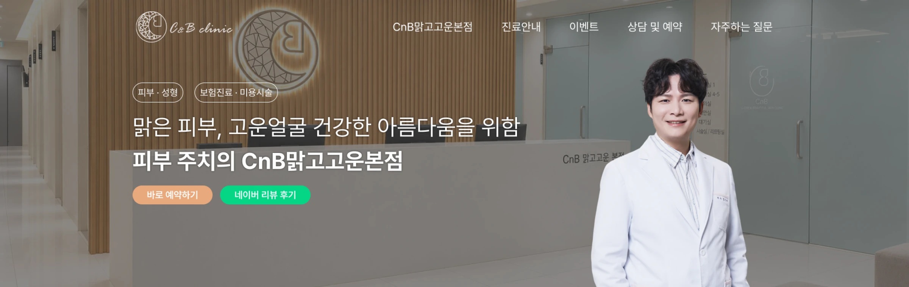
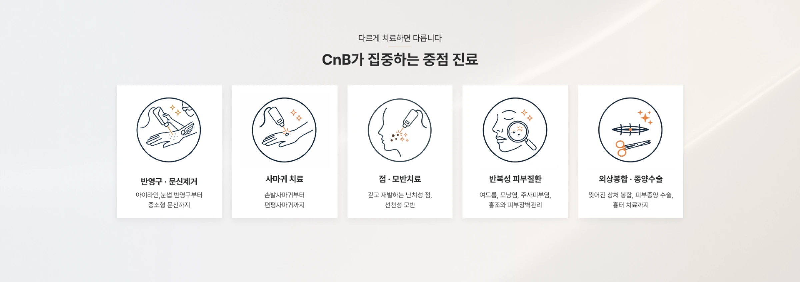
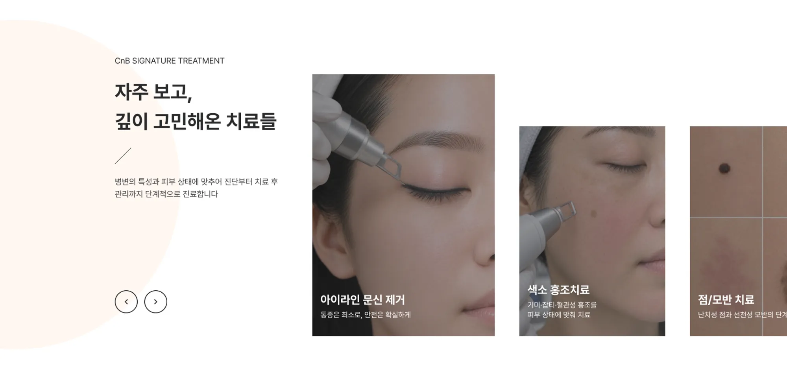
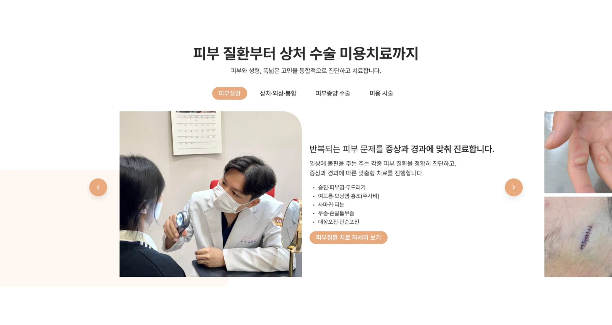
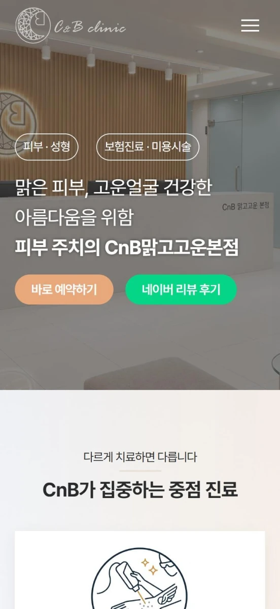
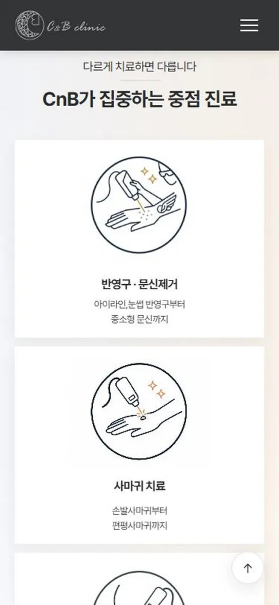

2026.10
CnB Clinic Renewal
CnB맑고고운본점 피부과 메인페이지 리디자인

- CLIENT
- CnB맑고고운본점의원
- PERIOD
- 2026.10 (약 1주)
- ROLE
- 디자인 100% · 퍼블리싱 100%
- SCOPE
- 메인페이지 · PC / 모바일
- TOOLS
- Figma · HTML · CSS
- WEBSITE
- pureclinic.co.kr ↗
SUMMARY
기획안을 화면으로,
화면을 코드로
피부과 기존 메인페이지를 리디자인한 프로젝트입니다. 마케팅팀의 기획안을 바탕으로 화면 구성과 디자인을 완성하고, HTML/CSS 퍼블리싱까지 혼자 진행했습니다.
진료 과목이 많은 병원이라 정보를 한눈에 찾을 수 있도록 정리하고, 처음 방문한 환자가 신뢰할 수 있는 첫 화면을 만드는 데 집중했습니다.
KEY POINTS
리디자인에서 바꾼 네 가지
01
메인 컬러 변경
메인 컬러를 웜 오렌지로 바꾸고, 배경은 베이지 톤으로 정리해 화면 전체의 색 흐름을 통일했습니다.
02
신뢰감 있는 첫인상
메인 비주얼에 대표원장 사진을, 하단에는 개원 연도·누적 환자 수·만족도를 보여 주는 수치 배너를 배치했습니다.
03
진료 과목 탭 정리
많은 진료 과목을 네 개의 탭으로 묶어 한 화면에서 찾을 수 있게 했습니다.
04
플로팅 퀵메뉴
상담·예약 채널을 화면 오른쪽에 고정해 어느 위치에서든 바로 이어지게 했습니다.
PROCESS
섹션별 화면
중점 진료
다섯 가지 중점 진료를 일러스트 아이콘 카드로 정리

시그니처 치료
대표 치료를 이미지 카드 슬라이드로 구성

진료 과목 탭
네 개 분야를 탭으로 전환하며 세부 진료 항목 확인

수치 배너
개원 연도·누적 환자 수·만족도로 신뢰 근거 제시

RESPONSIVE
모바일 화면
PC 화면의 정보 구조를 유지하면서 모바일에서는 카드와 탭을 한 열로 정리했습니다.




RESULT
결과
PC·모바일 반응형으로 구현해 메인 홈페이지 교체, 큰 수정 없이 마무리